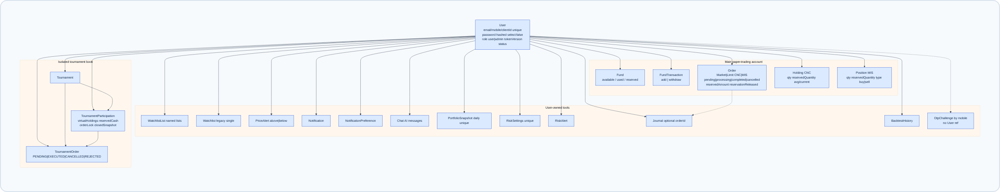

Persistence is managed by MongoDB using the Mongoose Object Data Modeling (ODM) framework. The schema design models high-frequency trading data, delivery equity holdings, multi-day ledger balances, audit trails, and virtual tournament portfolios.

models/UserModel.js)Master account entity storing personal details, authentication credentials, and access control roles.
| Field | Type | Constraints & Defaults | Description |
|---|---|---|---|
name | String | Required, trim | User full legal name. |
email | String | Required, unique, lowercase, trim | Account email address. |
mobile | String | Required, unique, trim | 10-digit verified Indian phone number. |
password | String | Required, select: false | bcrypt-hashed password (excluded from default queries). |
clientId | String | Required, unique, uppercase | 6-character broker trading ID (e.g. ZR9669). |
role | String | enum: ['trader', 'admin'], default: 'trader' | Access role for authorization. |
status | String | enum: ['active', 'suspended'], default: 'active' | Account status. |
tokenVersion | Number | default: 0 | Session version counter for revocation. |
lastLogin | Date | default: Date.now | Timestamp of last authenticated session. |
models/FundsModel.js)Maintains the three-tier balance ledger required for atomic order execution and margin management.
| Field | Type | Constraints & Defaults | Description |
|---|---|---|---|
userId | ObjectId / String | Required, ref: 'User', unique index | Associated trader ID. |
availableBalance | Number | default: 100000, min: 0 | Liquid capital available for new trades or withdrawal. |
usedBalance | Number | default: 0 | Capital currently deployed in active holdings or open positions. |
reservedBalance | Number | default: 0, min: 0 | Capital locked for pending buy limit orders. |
models/OrdersModel.js)Comprehensive order execution ledger tracking state transitions from pending to filled or canceled.
| Field | Type | Constraints & Defaults | Description |
|---|---|---|---|
userId | ObjectId / String | Required, ref: 'User', index | Trader placing the order. |
symbol | String | Required, uppercase, trim | NSE/BSE ticker symbol (e.g. RELIANCE). |
qty | Number | Required, min: 1 | Number of shares to execute. |
price | Number | Required, min: 0.05 | Order execution price (or limit trigger price). |
mode | String | enum: ['BUY', 'SELL'] | Trade direction. |
orderType | String | enum: ['MARKET', 'LIMIT'], default: 'MARKET' | Order trigger type. |
product | String | enum: ['CNC', 'MIS'], default: 'CNC' | Equity delivery vs. Intraday margin. |
status | String | enum: ['pending', 'processing', 'completed', 'cancelled'] | Execution lifecycle state. |
reservedAmount | Number | default: 0 | Cash amount locked while in pending status. |
reservationReleased | Boolean | default: false | Flag ensuring reserved funds are released exactly once. |
models/HoldingsModel.js)Long-term equity inventory acquired through Cash 'N Carry (CNC) delivery purchases.
| Field | Type | Constraints & Defaults | Description |
|---|---|---|---|
userId | ObjectId / String | Required, index | Owner of the equity holding. |
symbol | String | Required, uppercase | Equity ticker symbol. |
quantity | Number | Required, min: 0 | Unencumbered share quantity available to sell. |
averagePrice | Number | Required | Volume-weighted average purchase price. |
reservedQuantity | Number | default: 0 | Shares temporarily locked in pending limit sell orders. |
product | String | default: 'CNC' | Always CNC for delivery holdings. |
models/PositionsModel.js)Tracks leveraged Margin Intraday Square-off (MIS) trades that must be closed prior to market close.
| Field | Type | Constraints & Defaults | Description |
|---|---|---|---|
userId | ObjectId / String | Required, index | Trader holding the intraday position. |
symbol | String | Required, uppercase | Ticker symbol. |
quantity | Number | Required | Net active position share volume. |
averagePrice | Number | Required | Entry price for intraday position. |
type | String | enum: ['buy', 'sell'] | Position direction (Long vs. Short). |
product | String | default: 'MIS' | Intraday product identifier. |
FundTransactionModel: Double-entry deposit and withdrawal ledger entries with unique timestamps.TournamentModel: Competition configurations (start time, end time, entry fee, initial virtual balance).TournamentParticipationModel: User tournament entries tracking virtual portfolio, rank, and ROI.TournamentOrderModel: Order records scoped specifically to tournament competition portfolios.ChatModel: Threaded AI conversation messages between trader and Gemini assistant.WatchlistListModel: User watchlists containing ordered arrays of tracked symbols.PriceAlertModel: Price threshold triggers (above/below condition checks).RiskSettingsModel: Risk Guard parameters (maximum daily loss, position limits, leverage constraints).JournalModel: Trade reflection notes with psychological tags (FOMO, Greed, Disciplined).BacktestHistoryModel: Stored strategy backtest results with calculated financial KPIs.